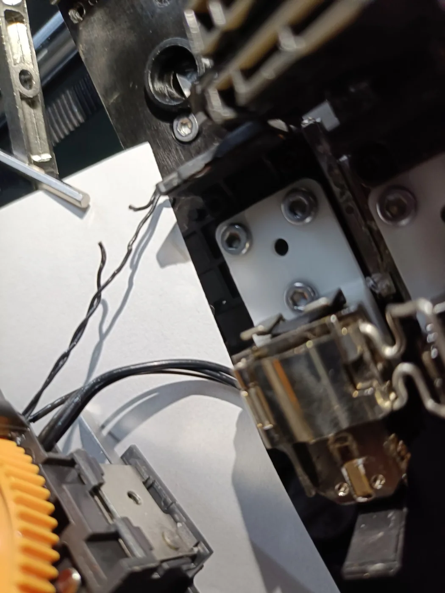
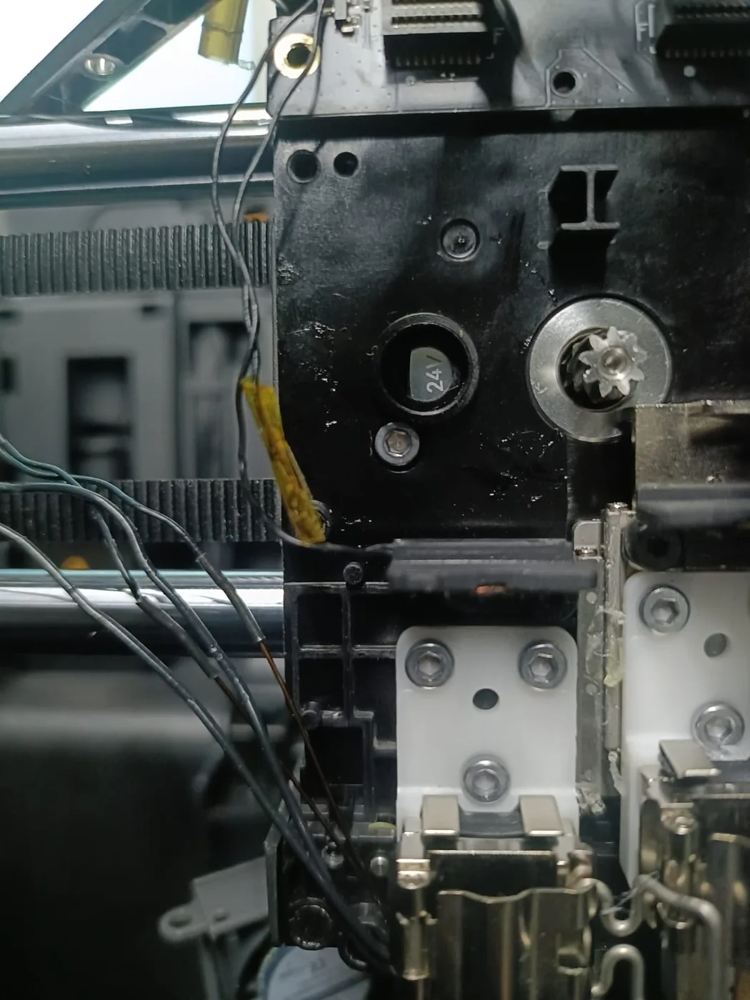
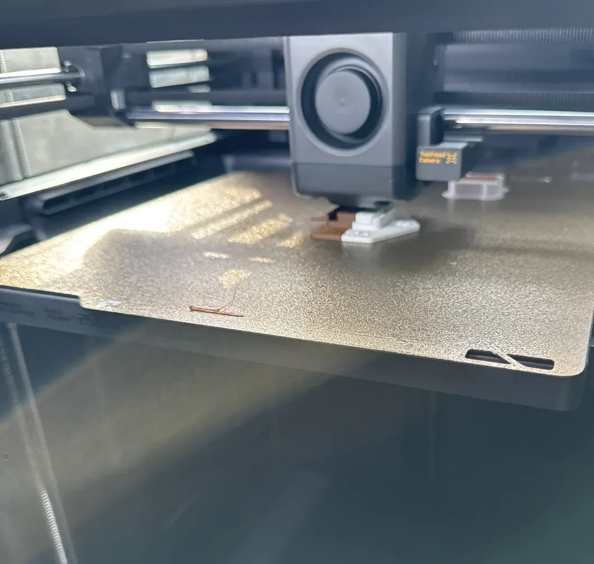
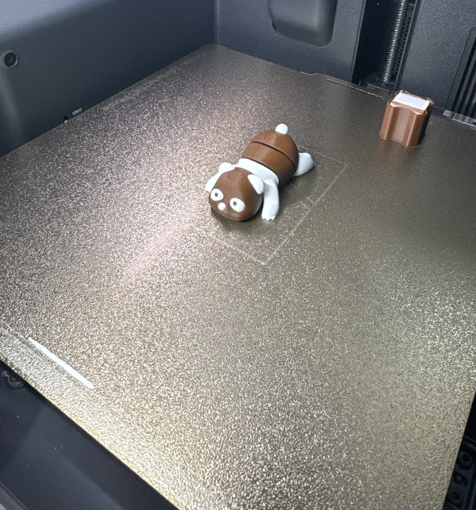

Bambu Lab X2D no detecta la boquilla derecha: el cable del sensor Eddy roto
· Caso del taller
La X2D trabaja con dos boquillas y necesita saber en todo momento cuál está en su lugar. Esta llegó con un aviso de que no detectaba la boquilla derecha. El dueño ya había seguido las soluciones de la wiki de Bambu Lab sin suerte, y tenía razón en sospechar del sensor: el cable del sensor Eddy estaba roto.

Lo que veía el dueño
La impresora marcaba que no encontraba la boquilla derecha. Antes de traerla, el dueño hizo lo que recomienda la wiki: revisar que la boquilla estuviera bien asentada, quitarla y volverla a poner, reiniciar. El aviso seguía. Cuando una falla no se va con lo básico y siempre señala el mismo lado, conviene dejar de pensar en la boquilla y empezar a pensar en lo que la detecta.
Lo que encontramos en el cabezal
Abrimos el cabezal y seguimos el cableado del lado derecho. El cable del sensor Eddy, el que la impresora usa para detectar la boquilla, estaba trozado. Son dos hilos muy delgados, y uno de ellos ya no hacía contacto. Con el cable abierto, la impresora simplemente no recibe la señal y concluye que no hay boquilla, aunque esté bien puesta.
Este tipo de daño no se ve desde fuera. El cabezal se mueve miles de veces en cada impresión y los cables delgados trabajan doblándose; con el tiempo, o con un golpe al cambiar boquillas, se pueden fracturar por dentro.

Lo que hicimos
Soldamos el cable y protegimos la unión. Con eso la X2D volvió a detectar la boquilla derecha y pasó las pruebas de impresión. Pero fuimos claros con el dueño: una soldadura en un cable que se mueve todo el día es una reparación temporal. Funciona, pero el punto donde se rompió sigue siendo un punto débil. Lo que recomendamos es cambiar el sensor Eddy por uno nuevo, y se lo cotizamos para que él decidiera.
Preferimos explicarlo así a entregarla como si estuviera nueva. Si la falla vuelve en unos meses, el dueño ya sabe de dónde viene y qué pieza pedir.


Lo que puedes revisar tú
- Sigue primero la wiki. Asentar bien la boquilla, quitarla y volverla a poner y reiniciar resuelve muchos avisos de detección. No pierdes nada en probarlo.
- Fíjate si el aviso es siempre del mismo lado. Si la boquilla izquierda funciona y la derecha no, aunque cambies de boquilla, el problema casi seguro no es la boquilla: está en el cabezal, en el sensor o en su cable.
- Cambia boquillas con calma. Sin jalar el cabezal ni forzar los seguros. Los cables del cabezal son delgados y no aguantan tirones.
- Revisa que no haya filamento acumulado. Una bola de filamento alrededor del hotend también puede estorbar la detección. Si la hay, apaga, deja enfriar y límpiala antes de seguir.
Cuándo llevarla al taller
Si ya seguiste los pasos de la wiki y el aviso sigue en el mismo lado, lo más probable es que haya un cable o un sensor dañado dentro del cabezal. Abrir el cabezal de una X2D implica desconectar cables planos y conectores pequeños, y es fácil dañar algo más en el camino.
En el taller lo abrimos, encontramos el punto exacto de la falla y te mandamos fotos. Si hay opción de reparar el cable y también de cambiar la pieza, te explicamos las dos y tú decides.
Sigue leyendo
¿Tu impresora tiene algo parecido?
Diagnóstico en el taller con fotos de lo que encontramos y la cotización antes de cambiar cualquier pieza. Recibimos impresoras de todo México por paquetería.